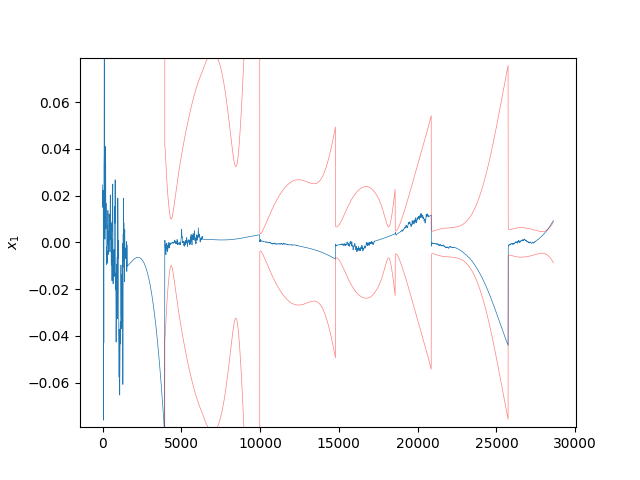
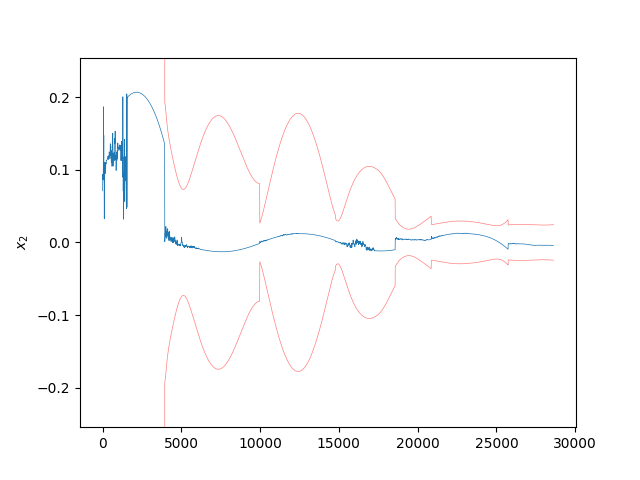
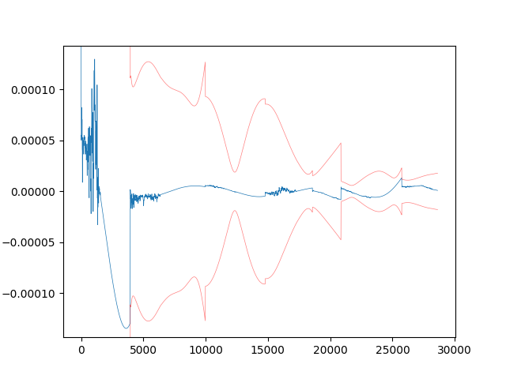
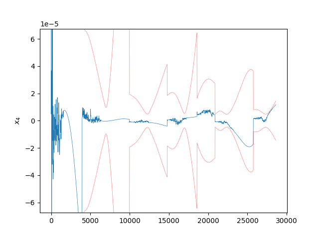
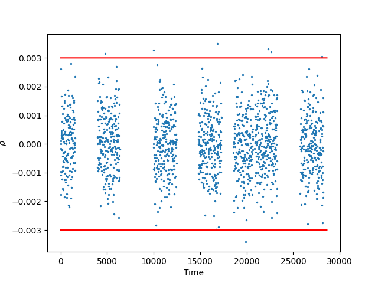
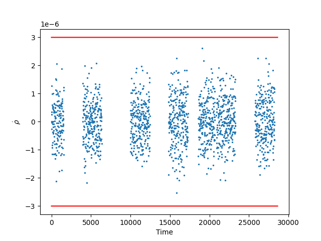

Note
Click here to download the full example code
Kalman Filter with Stochastic Noise Compensation Example
7 8 9 10 11 12 13 14 15 16 17 | import time
import pickle
import numpy as np
import matplotlib.pyplot as plt
import StatOD
from StatOD.data import get_measurements
from StatOD.dynamics import dynamics, f_J2, get_Q, process_noise
from StatOD.filters import FilterLogger, KalmanFilter
from StatOD.measurements import h_rho_rhod, measurements
from StatOD.visualizations import *
from StatOD.constants import *
|
To begin, gather the telemetry / measurements that will be used by the filter to update the state. In this example, the telemetry is the range and range-rate in kilometers of spacecraft in orbit whose dynamics include a point mass and $J_2$ gravity contribution.
Note that the telemetry is measured by three stations on the surface of Earth. The get_measurements function evolves the location of these stations in the Earth-Centered Inertial (ECI) frame and returns it alongside the time and range/range-rate measurements (t, Y).
30 31 32 33 34 35 | t, Y, X_stations_ECI = get_measurements("Data/Measurements/range_rangerate_w_J2_w_noise.data")
# Reduce the simulation length for faster evaluation.
M_end = len(t) // 5
t = t[:M_end]
Y = Y[:M_end]
|
Initialize the starting state $(x, y, z, v_x, v_y, v_z)$ in [km] and [km/s] respectively and then add an initial perturbation (dx0). Also initialize the initial state and measurement covariance (P0 and R0). The measurements included gaussian noise on the order of 1 meter in range and 1 mm/s in range rate, hence the choice of diagonals for the measurement covariance R0.
43 44 45 46 47 48 49 50 51 52 | ep = EarthParams()
cart_state = np.array([-3515.4903270335103, 8390.716310243395, 4127.627352553683,
-4.357676322178153, -3.3565791387645487, 3.111892927869902])
dx0 = np.array([0.1, 0.0, 0.0, 1E-4, 0.0, 0.0])
x0 = cart_state + dx0
P0 = np.diag([1, 1, 1, 1E-3, 1E-3, 1E-3])**2
R0 = np.diag([1E-3, 1E-6])**2
t0 = 0.0
|
In this example, stochastic noise compensation is used. The process noise matrix $Q_0$ is defined below.
Because the continuous time process noise is different than the discrete process noise matrix a process noise function must be defined (Q_fcn). This function is computed using sympy to compute an exact symbolic expression on the fly to accommodate any arbitrary estimation scenario. This symbolic expression is then lambdified to be used within the filter. This process is repeated for the dynamics and measurement functions.
As such, users must pass representative values of the state and any auxillary arguments to the generating function process_noise.
67 68 69 | Q0 = np.eye(3) * 1e-7 ** 2
Q_args = []
Q_fcn = process_noise(x0, Q0, get_Q, Q_args, use_numba=False)
|
Likewise, the dynamics and measurement functions must be computed symbolically and then lambdified. A collection of dynamics function are provided within the StatOD.Dynamics file. In this example the spacecraft’s dynamics are influenced only by point mass gravity and $J_2$. Therefore, the f_J2 symbolic expression is selected, and passed to the generating function dynamics alongside the additional arguments not included in the state that are needed for the dynamics function (f_args).
The measurement functions are generated the same way, passing in a representative state and additional arguments into the generating function such that a lambdified symbolic expression can be produced and passed to the filter.
82 83 84 85 86 87 88 89 90 91 92 93 94 95 | f_args = np.array([ep.R, ep.mu, ep.J2])
f, dfdx = dynamics(x0, f_J2, f_args)
f_dict = {
"f": f,
"dfdx": dfdx,
"f_args": f_args,
"Q_fcn": Q_fcn,
"Q": Q0,
"Q_args": Q_args,
}
h_args = X_stations_ECI[0]
h, dhdx = measurements(x0, h_rho_rhod, h_args)
h_dict = {'h': h, 'dhdx': dhdx, 'h_args': h_args}
|
Now that the lambdified symbolic measurement and dynamics functions are produced, the auxiallary arguments not included in the state should be gathered for each measurement. For the dynamics model, this means passing in the fixed parameters $(R, mu, J_2)$ at each time step. For the measurement function, this includes the stations position in the ECI frame.
103 104 105 | f_args_vec = np.full((len(t), len(f_args)), f_args)
h_args_vec = X_stations_ECI
R_vec = np.repeat(np.array([R0]), len(t), axis=0)
|
To initialize the filter, pass in the initial parameters and corresponding generating functions. With the filter initialized, call the .run() command with the vectors of time, measurements, measurement covariances, dynamics and measurement auxillary arguments.
112 113 114 115 116 | start_time = time.time()
logger = FilterLogger(len(x0), len(t))
filter = KalmanFilter(t0, x0, dx0, P0, f_dict, h_dict, logger=logger)
filter.run(t, Y[:,1:], R_vec, f_args_vec, h_args_vec)
print("Time Elapsed: " + str(time.time() - start_time))
|
Progress: 0%| | 0/2862 [00:00<?, ?it/s]
Progress: 0%| | 1/2862 [00:03<2:38:59, 3.33s/it]
Progress: 1%| | 22/2862 [00:03<05:19, 8.90it/s]
Progress: 2%|1 | 45/2862 [00:03<02:13, 21.09it/s]
Progress: 2%|2 | 67/2862 [00:03<01:18, 35.58it/s]
Progress: 3%|3 | 89/2862 [00:03<00:52, 52.74it/s]
Progress: 4%|3 | 112/2862 [00:03<00:37, 73.47it/s]
Progress: 5%|4 | 137/2862 [00:03<00:27, 98.71it/s]
Progress: 6%|5 | 162/2862 [00:04<00:21, 124.24it/s]
Progress: 7%|6 | 188/2862 [00:04<00:17, 150.60it/s]
Progress: 7%|7 | 213/2862 [00:04<00:15, 171.99it/s]
Progress: 8%|8 | 238/2862 [00:04<00:14, 185.99it/s]
Progress: 9%|9 | 262/2862 [00:04<00:13, 196.44it/s]
Progress: 10%|9 | 286/2862 [00:04<00:12, 206.43it/s]
Progress: 11%|# | 310/2862 [00:04<00:11, 214.38it/s]
Progress: 12%|#1 | 334/2862 [00:04<00:11, 221.33it/s]
Progress: 13%|#2 | 358/2862 [00:04<00:11, 225.15it/s]
Progress: 13%|#3 | 382/2862 [00:04<00:11, 221.53it/s]
Progress: 14%|#4 | 405/2862 [00:05<00:11, 219.13it/s]
Progress: 15%|#4 | 428/2862 [00:05<00:11, 220.31it/s]
Progress: 16%|#5 | 451/2862 [00:05<00:10, 221.51it/s]
Progress: 17%|#6 | 474/2862 [00:05<00:11, 215.25it/s]
Progress: 17%|#7 | 496/2862 [00:05<00:11, 209.15it/s]
Progress: 18%|#8 | 518/2862 [00:05<00:11, 210.71it/s]
Progress: 19%|#8 | 540/2862 [00:05<00:10, 212.87it/s]
Progress: 20%|#9 | 563/2862 [00:05<00:10, 215.40it/s]
Progress: 20%|## | 585/2862 [00:05<00:10, 216.12it/s]
Progress: 21%|##1 | 608/2862 [00:06<00:10, 217.66it/s]
Progress: 22%|##2 | 632/2862 [00:06<00:09, 224.02it/s]
Progress: 23%|##2 | 658/2862 [00:06<00:09, 233.92it/s]
Progress: 24%|##3 | 685/2862 [00:06<00:09, 241.56it/s]
Progress: 25%|##4 | 711/2862 [00:06<00:08, 245.53it/s]
Progress: 26%|##5 | 736/2862 [00:06<00:08, 243.87it/s]
Progress: 27%|##6 | 761/2862 [00:06<00:08, 241.64it/s]
Progress: 27%|##7 | 786/2862 [00:06<00:08, 241.93it/s]
Progress: 28%|##8 | 811/2862 [00:06<00:08, 239.11it/s]
Progress: 29%|##9 | 835/2862 [00:06<00:08, 235.60it/s]
Progress: 30%|### | 859/2862 [00:07<00:08, 225.27it/s]
Progress: 31%|### | 883/2862 [00:07<00:08, 227.09it/s]
Progress: 32%|###1 | 907/2862 [00:07<00:08, 230.03it/s]
Progress: 33%|###2 | 931/2862 [00:07<00:08, 225.33it/s]
Progress: 33%|###3 | 955/2862 [00:07<00:08, 229.48it/s]
Progress: 34%|###4 | 979/2862 [00:07<00:08, 229.04it/s]
Progress: 35%|###5 | 1003/2862 [00:07<00:08, 231.38it/s]
Progress: 36%|###5 | 1027/2862 [00:07<00:08, 227.39it/s]
Progress: 37%|###6 | 1050/2862 [00:07<00:08, 226.09it/s]
Progress: 37%|###7 | 1073/2862 [00:08<00:07, 224.97it/s]
Progress: 38%|###8 | 1096/2862 [00:08<00:07, 226.25it/s]
Progress: 39%|###9 | 1120/2862 [00:08<00:07, 227.71it/s]
Progress: 40%|#### | 1146/2862 [00:08<00:07, 234.36it/s]
Progress: 41%|#### | 1171/2862 [00:08<00:07, 238.22it/s]
Progress: 42%|####1 | 1196/2862 [00:08<00:06, 240.16it/s]
Progress: 43%|####2 | 1221/2862 [00:08<00:06, 236.00it/s]
Progress: 44%|####3 | 1245/2862 [00:08<00:07, 229.38it/s]
Progress: 44%|####4 | 1269/2862 [00:08<00:06, 232.29it/s]
Progress: 45%|####5 | 1293/2862 [00:08<00:06, 232.91it/s]
Progress: 46%|####6 | 1317/2862 [00:09<00:06, 232.98it/s]
Progress: 47%|####6 | 1341/2862 [00:09<00:06, 230.04it/s]
Progress: 48%|####7 | 1365/2862 [00:09<00:06, 228.55it/s]
Progress: 49%|####8 | 1389/2862 [00:09<00:06, 229.29it/s]
Progress: 49%|####9 | 1412/2862 [00:09<00:06, 226.19it/s]
Progress: 50%|##### | 1436/2862 [00:09<00:06, 227.48it/s]
Progress: 51%|#####1 | 1460/2862 [00:09<00:06, 229.14it/s]
Progress: 52%|#####1 | 1484/2862 [00:09<00:05, 230.38it/s]
Progress: 53%|#####2 | 1508/2862 [00:09<00:05, 227.51it/s]
Progress: 53%|#####3 | 1531/2862 [00:10<00:05, 228.04it/s]
Progress: 54%|#####4 | 1554/2862 [00:10<00:05, 226.90it/s]
Progress: 55%|#####5 | 1577/2862 [00:10<00:05, 225.68it/s]
Progress: 56%|#####5 | 1600/2862 [00:10<00:05, 217.63it/s]
Progress: 57%|#####6 | 1624/2862 [00:10<00:05, 223.71it/s]
Progress: 58%|#####7 | 1650/2862 [00:10<00:05, 232.05it/s]
Progress: 59%|#####8 | 1675/2862 [00:10<00:05, 234.68it/s]
Progress: 59%|#####9 | 1700/2862 [00:10<00:04, 237.19it/s]
Progress: 60%|###### | 1724/2862 [00:10<00:04, 230.51it/s]
Progress: 61%|######1 | 1748/2862 [00:10<00:04, 231.49it/s]
Progress: 62%|######1 | 1772/2862 [00:11<00:04, 232.79it/s]
Progress: 63%|######2 | 1796/2862 [00:11<00:04, 233.94it/s]
Progress: 64%|######3 | 1820/2862 [00:11<00:04, 226.58it/s]
Progress: 64%|######4 | 1843/2862 [00:11<00:04, 221.50it/s]
Progress: 65%|######5 | 1866/2862 [00:11<00:04, 223.09it/s]
Progress: 66%|######6 | 1889/2862 [00:11<00:04, 220.75it/s]
Progress: 67%|######6 | 1912/2862 [00:11<00:04, 221.19it/s]
Progress: 68%|######7 | 1935/2862 [00:11<00:04, 221.37it/s]
Progress: 68%|######8 | 1958/2862 [00:11<00:04, 221.72it/s]
Progress: 69%|######9 | 1981/2862 [00:12<00:03, 220.80it/s]
Progress: 70%|####### | 2004/2862 [00:12<00:03, 220.81it/s]
Progress: 71%|####### | 2027/2862 [00:12<00:03, 220.66it/s]
Progress: 72%|#######1 | 2050/2862 [00:12<00:03, 221.09it/s]
Progress: 72%|#######2 | 2073/2862 [00:12<00:03, 220.93it/s]
Progress: 73%|#######3 | 2096/2862 [00:12<00:03, 223.51it/s]
Progress: 74%|#######4 | 2121/2862 [00:12<00:03, 230.23it/s]
Progress: 75%|#######4 | 2146/2862 [00:12<00:03, 234.79it/s]
Progress: 76%|#######5 | 2171/2862 [00:12<00:02, 237.71it/s]
Progress: 77%|#######6 | 2195/2862 [00:12<00:02, 236.98it/s]
Progress: 78%|#######7 | 2219/2862 [00:13<00:02, 232.76it/s]
Progress: 78%|#######8 | 2243/2862 [00:13<00:02, 229.65it/s]
Progress: 79%|#######9 | 2266/2862 [00:13<00:02, 227.72it/s]
Progress: 80%|#######9 | 2289/2862 [00:13<00:02, 221.20it/s]
Progress: 81%|######## | 2312/2862 [00:13<00:02, 220.69it/s]
Progress: 82%|########1 | 2336/2862 [00:13<00:02, 223.84it/s]
Progress: 82%|########2 | 2361/2862 [00:13<00:02, 229.45it/s]
Progress: 83%|########3 | 2386/2862 [00:13<00:02, 233.12it/s]
Progress: 84%|########4 | 2410/2862 [00:13<00:01, 235.00it/s]
Progress: 85%|########5 | 2434/2862 [00:13<00:01, 234.96it/s]
Progress: 86%|########5 | 2458/2862 [00:14<00:01, 235.06it/s]
Progress: 87%|########6 | 2482/2862 [00:14<00:01, 236.08it/s]
Progress: 88%|########7 | 2506/2862 [00:14<00:01, 235.51it/s]
Progress: 88%|########8 | 2530/2862 [00:14<00:01, 234.69it/s]
Progress: 89%|########9 | 2554/2862 [00:14<00:01, 231.49it/s]
Progress: 90%|######### | 2578/2862 [00:14<00:01, 229.24it/s]
Progress: 91%|######### | 2601/2862 [00:14<00:01, 222.25it/s]
Progress: 92%|#########1| 2624/2862 [00:14<00:01, 222.97it/s]
Progress: 93%|#########2| 2649/2862 [00:14<00:00, 228.99it/s]
Progress: 93%|#########3| 2674/2862 [00:15<00:00, 233.97it/s]
Progress: 94%|#########4| 2698/2862 [00:15<00:00, 233.94it/s]
Progress: 95%|#########5| 2722/2862 [00:15<00:00, 233.10it/s]
Progress: 96%|#########5| 2746/2862 [00:15<00:00, 233.94it/s]
Progress: 97%|#########6| 2770/2862 [00:15<00:00, 224.35it/s]
Progress: 98%|#########7| 2793/2862 [00:15<00:00, 218.03it/s]
Progress: 98%|#########8| 2816/2862 [00:15<00:00, 219.67it/s]
Progress: 99%|#########9| 2840/2862 [00:15<00:00, 223.34it/s]
Progress: 100%|##########| 2862/2862 [00:15<00:00, 180.31it/s]
Time Elapsed: 15.875252485275269
After the filter finishes, the corresponding state pre- and post- measurement updates are saved in the filter.logger attribute. These can be used to produce the measurement residuals which can then be plotted.
123 124 125 126 127 128 129 130 131 132 133 134 135 136 137 | package_dir = os.path.dirname(StatOD.__file__) + "/../"
with open(package_dir + 'Data/Trajectories/trajectory_J2.data', 'rb') as f:
traj_data = pickle.load(f)
x_truth = traj_data['X'][:M_end]
y_hat_vec = np.zeros((len(t), 2))
for i in range(len(t)):
y_hat_vec[i] = filter.predict_measurement(logger.x_i[i], logger.dx_i_plus[i], h_args_vec[i])
directory = "Plots/" + filter.__class__.__name__ + "/"
y_labels = np.array([r'$\rho$', r'$\dot{\rho}$'])
vis = VisualizationBase(logger, directory, False)
vis.plot_state_errors(x_truth)
vis.plot_residuals(Y[:,1:], y_hat_vec, R_vec, y_labels)
plt.show()
|

- 
- 
- 
- 

- 
- 
Total running time of the script: ( 0 minutes 20.499 seconds)